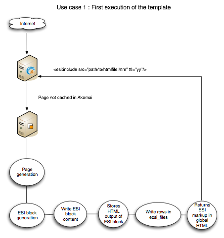
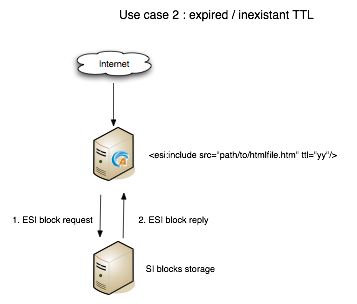
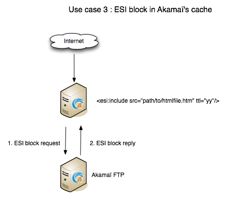
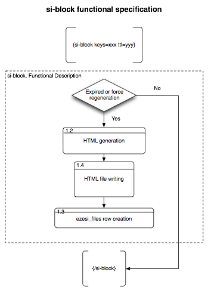
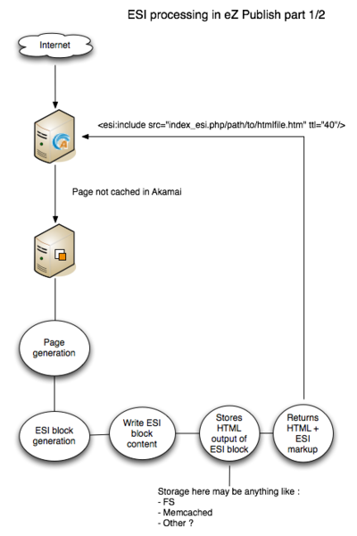
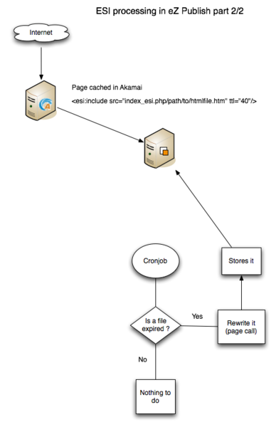
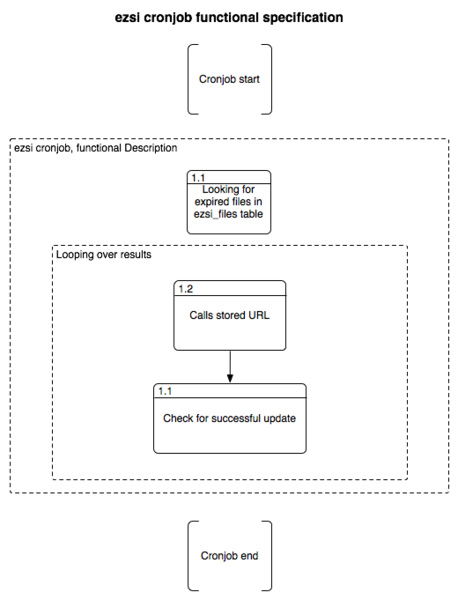

eZ SI 1.2 manual
eZ SI makes it possible for an eZ Publish site to generate ESI or SSI tags in its HTML page, with faster development and increased performance as direct result.
How does this extension work
The following use case diagrams will explain how this extension works.
Use case: first execution of the template

Use case: expired or non-existant TTL

Use case: ESI block in Akamai's cache

SI-block functional specification

ESI processing part 1/2

ESI processing part 2/2

The cronjob workflow

Powered by eZ Publish™ CMS Open Source Web Content Management. Copyright © 1999-2013 eZ Systems AS (except where otherwise noted). All rights reserved.